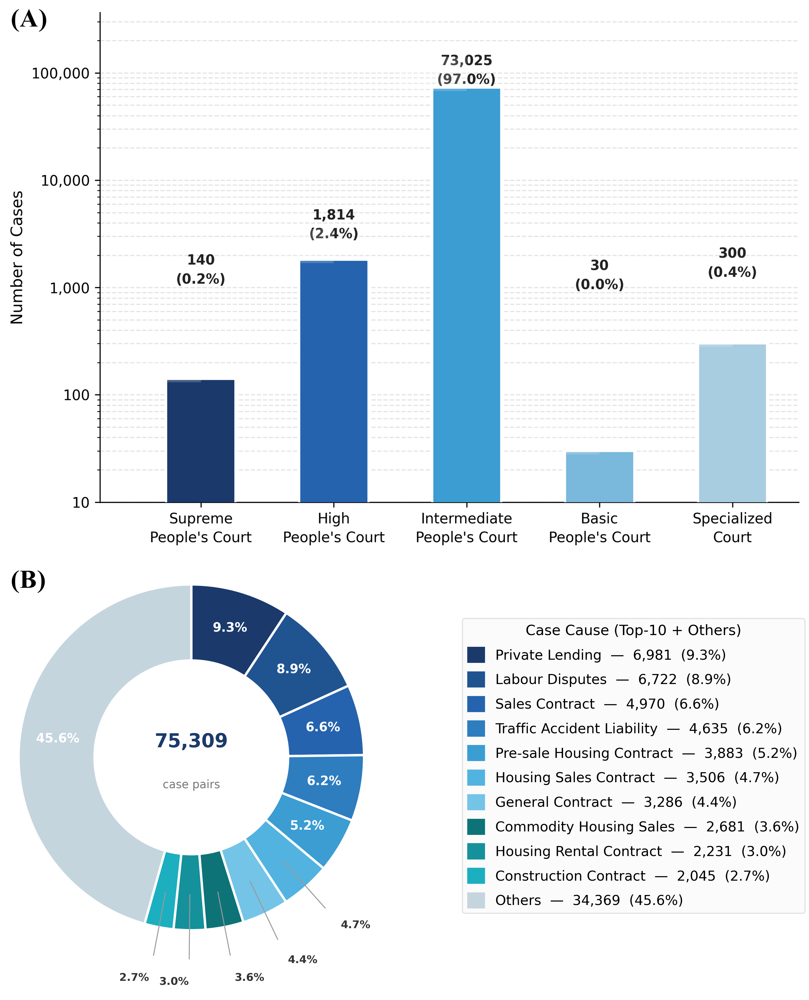
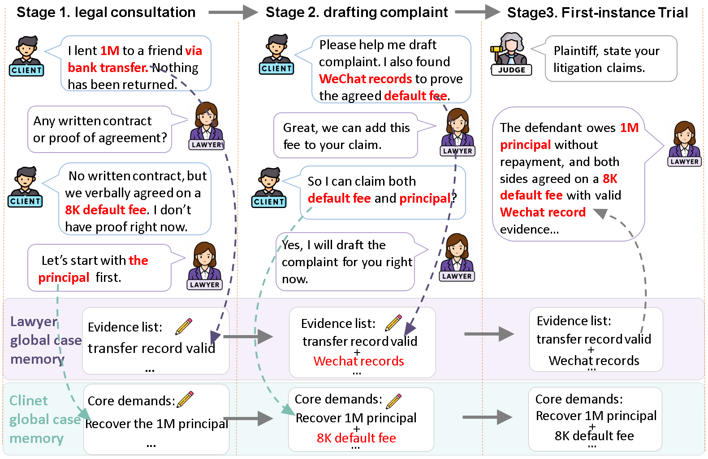
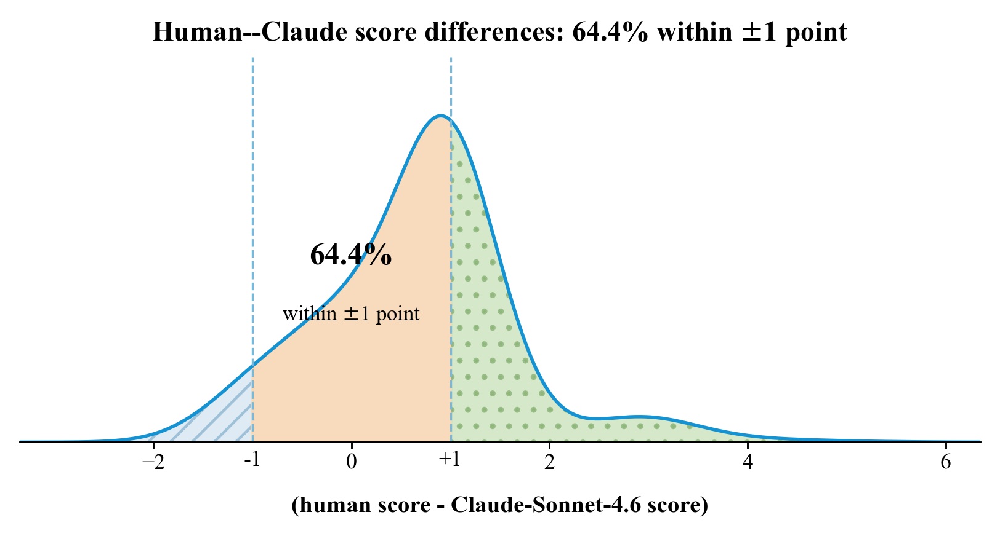
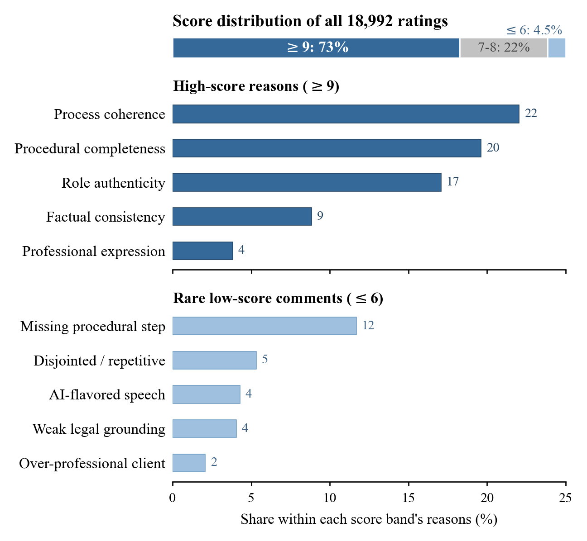
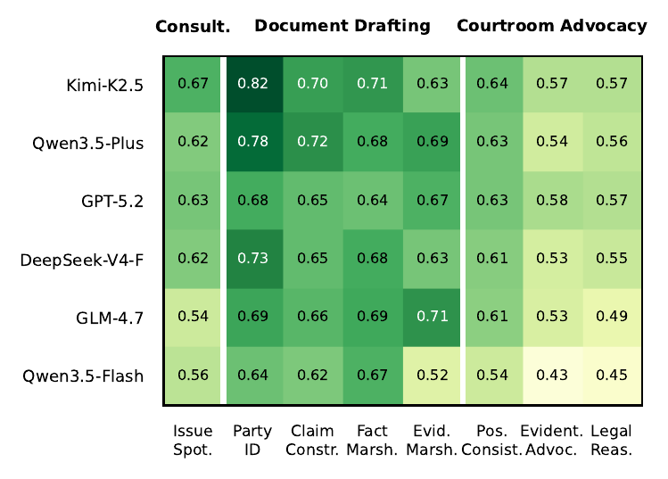
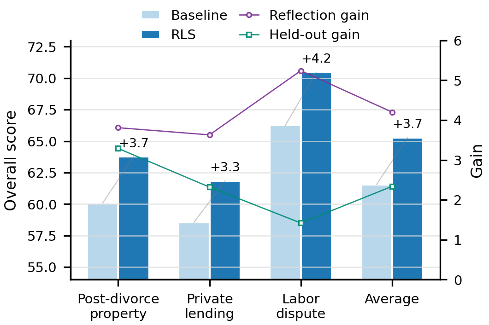

Overview
Civil litigation is not a collection of isolated tasks. Earlier consultation and drafting choices shape what can be argued at trial, how evidence is used, and what happens on appeal. LEGALWORLD turns that process into a connected interactive environment for legal agents, modeling Chinese civil litigation as a causally linked state chain across five stages and seven sub-scenarios.
Built on 75,309 paired Chinese civil judgments, LEGALWORLD provides role-bound interfaces for clients, lawyers, and judges, plus local memory, global case memory, and a modular Skill/Tool library. On top of the environment, LongJud-Bench evaluates legal-agent capability across consultation, drafting, courtroom advocacy, appeal, and second-instance proceedings.
Data Foundation
LEGALWORLD is grounded in 75,309 paired first- and second-instance Chinese civil judgments. The paired structure is important: it lets each runnable case preserve the relationship between an initial dispute, its first-instance judgment, the appeal context, and the final appellate outcome.
The corpus covers more than 500 causes of action, ranging from high-frequency disputes such as private lending and labor disputes to long-tail civil cases. This breadth is what makes it possible to construct life-cycle trajectories rather than a small set of hand-written scenes.
In the current paper version: 75,309 paired cases support five connected stages and seven sub-scenarios, with 18,992 human ratings from 217 legal-background evaluators used for reliability validation.

Life-Cycle Environment
LEGALWORLD unfolds a civil dispute from the first client consultation to the final second-instance judgment. Each stage consumes the artifacts produced by the previous stage: facts disclosed during consultation become complaint claims, drafted claims constrain courtroom advocacy, and trial outcomes shape the appeal record.
This is why the environment uses both in-scenario local memory and global case memory. Local memory keeps a single stage coherent, while global case memory carries facts, evidence, litigation goals, and role-specific cognition across the full procedural chain. Clients, lawyers, and judges therefore do not restart from a shared omniscient state; they operate under their own visibility, duties, and procedural permissions.
The Tool/Skill layer gives agents procedural support for retrieval, document drafting, citation checking, artifact reading, and memory writing. The goal is not only to make agents talk like legal roles, but to make them act through the same kinds of artifacts and constraints that structure legal practice.

Experiments
The experiments first ask whether LEGALWORLD produces reliable legal trajectories, then use the validated environment to evaluate model backbones through LongJud-Bench. The paper studies stage authenticity, role consistency, judicial-output alignment, cross-stage dependence, cross-model capability profiles, and a small trajectory-reflection probe.
Environment reliability.
Across all five stages and three roles, 217 legal-background evaluators rate LEGALWORLD at 8.96/10 on stage authenticity and 8.98/10 on role consistency. The human study contributes 18,992 ratings, and 64.4 percent of aligned human and LLM-as-Judge metric pairs fall within one point. The free-text explanations also point to process coherence, procedural completeness, and role authenticity as the dominant reasons for high scores.


LongJud-Bench cross-model evaluation.
LongJud-Bench scores lawyer agents across the full litigation process through eight capabilities: issue spotting, party identification, claim construction, fact marshalling, evidence marshalling, position consistency, evidentiary advocacy, and legal reasoning. The capability profile reveals that no backbone wins everywhere. Drafting strength, claim construction, and courtroom advocacy separate in ways that aggregate scores would hide.
The paper finds courtroom advocacy to be the shared frontier. Compared with drafting, advocacy requires the lawyer agent to integrate accumulated memory, opposing statements, judge prompts, and evidentiary constraints in multi-turn interaction, which makes it the most discriminative target for future legal-agent training.

Trajectory reflection as a training signal.
As an exploratory probe, the paper tests whether completed life-cycle trajectories can produce reusable reflective Skill notes. On the three most frequent civil causes of action in the dataset, adding these notes raises the average LongJud-Bench overall score from 61.56 to 65.29, a gain of 3.73 points. Gains appear both on reflected cases and on held-out same-cause cases, suggesting that life-cycle interaction traces can serve not only for evaluation, but also as procedurally grounded data for improving legal agents.

Release Status
This project page is prepared before the arXiv release. The paper PDF and public backend code are available for preview, while the arXiv page, data release, and BibTeX entry are intentionally left pending until the public release is ready. Large data assets, including the law-retrieval vector index, will be distributed through the data release rather than stored in the GitHub code repository.